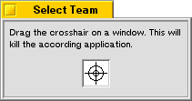
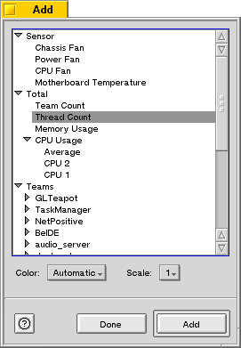
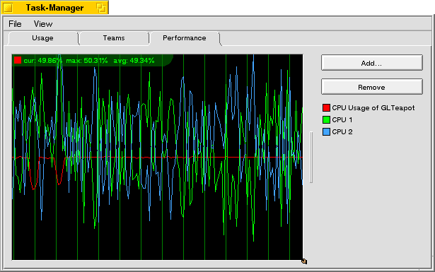

| Be TaskManager Documentation |
Be TaskManager is display three different tabs:
Each of the tabs lets you inspect another aspect of your system.
The Usage tab displays your computer's memory and CPU usage. The memory usage is the usage of your physical memory, not the virtual memory.
Each of the views inside that tab can be used as a replicant.
The teams tab displays all the teams (processes) in your system. Depending on your settings it displays additional information for each team, including:
The CPU and memory usage are displayed not only as text but also as bar. The CPU usage bar contains the kernel usage (the lighter bar) and the total CPU usage (the darker bar) of that team.
The name of BeOS system teams is displayed in blue. You can disable that the system teams are displayed. This is done through the settings dialog.
By a right click on a team (or a left click while holding down the option key) you can bring up its context menu. The context menu contains these options:
The kill button just works like the "Kill" context menu entry. Double-clicking a team's entry will activate it.
To quit a team is a more gentle way to get rid of it than to kill it. This gives the team the possibility to save it's settings and to ask if some documents are still unsaved. If you kill a team you may loose your unsaved work. If you try to quit a team, which doesn't respond (e.g. because it hangs) Be TaskManager waits for 10 seconds and displays a dialog asking if you want to kill that team.
Killing a teams - especially system teams - is dangerous and may compromise your system's stability. Therefore a warning dialog is displayed before you can kill a team. If you don't want that dialog to show up again simply disable its "Show this dialog again" checkmark. Doing so will kill the team next time -- without a warning. Note: there are diffent warning dialogs for system teams and normal teams. These warning dialogs need to be disabled seperately.
If you want to kill a team but don't know the exact name of the executable klick on the "X-Kill" button. This will open this window:
When you drag the crosshair on a window the application which opened that window will be killed.
You can't kill teams that are controlled by a debugger. If you try it anyway you get the option to kill the debugger instead of the controlled team.
If you set the priority of a team you change the team's base priority. The base priority is simply the average priority of all threads of that team. This means changing the teams priority won't change the relative priority of the threads. Also the priority of realtime threads won't be changed. This can result in an unchanged base priority, if the team contains many realtime threads. You can't change the base priority to real time priority. This is simply a safety feature.
The performance tab is the most complex and most flexible. It works like the Memory and CPU Graph View in the Usage tab. But here you can configure which information is displayed.
When you start Be TaskManager the graph view is empty. Before it displays something you must add a performance counter to it. This is done through the add dialog:
The upper part of the add dialog displays a list of all available performance counters. This includes:
Select one of the performance counters in the list. Some of the entries in the list are only included to group the data providers. If you select one of these entries the "Add" button is disabled. Then you can select the color which is used to display that data provider. If you leave it on "Automatic" Be TaskManager selects an unused color for you. Because you can add performance counters with different unit to the graph view, you can change the scale to ajust the counters to stay in the same range. If you only add performance information with the same unit (e.g. only CPU usage information, which is always expressed in percent) you should use the default setting (which is "1"). If your are comfortable with your settings hit the "Add" button.
The performance counter is added to the graph view immediately. Add as many performance counters as you wish. If you are done simply hit the "Done" button. The performance tab should now look similar to this:
Note that the graph view displays the maximum, minimum and current value of the selected performance counter in the upper left coner. To select another entry simply click on it in the legend. By double-clicking an entry in the legend you can change its settings (color and scale). To remove the currently selected performance counter simply hit the "Remove" button.
You can use the graph view as replicant. Please note that some of the performance counters can't be persistent. For example the CPU usage performance counter of a team will always display zero, if the team no longer exists. When you drag a view to the desktop which contains such a performance counter, it will display zero if your machine comes up again, because most certainly a team with that team-id doesn't exist after the reboot.